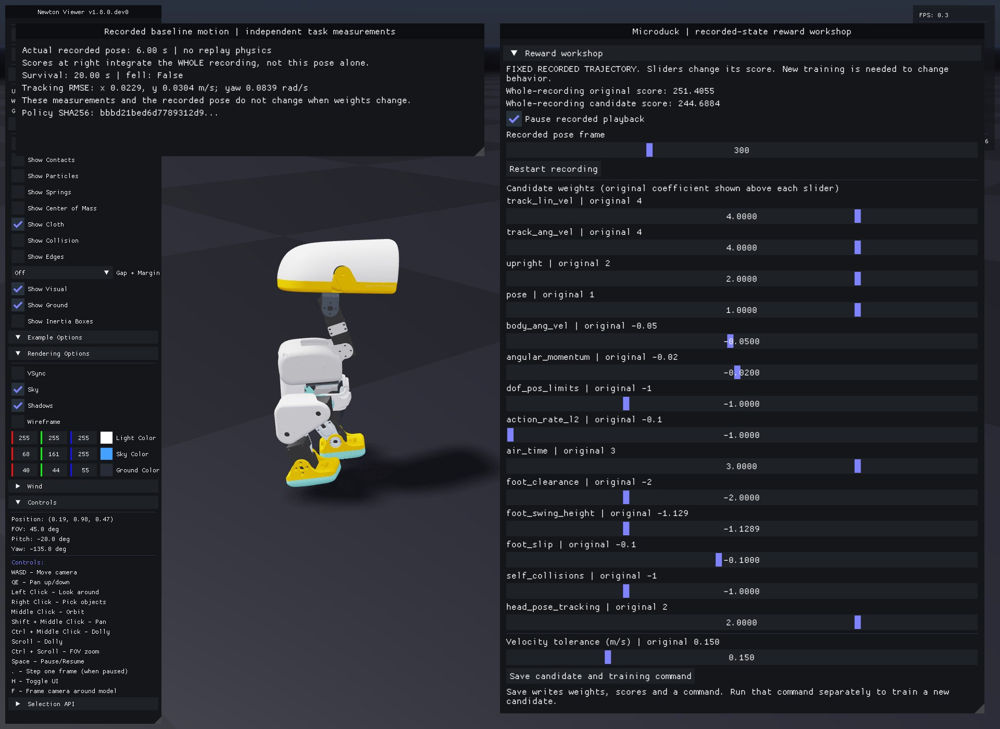
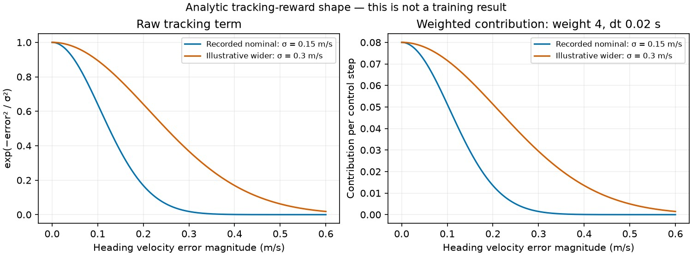
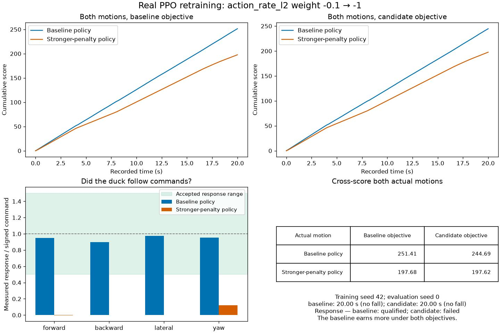
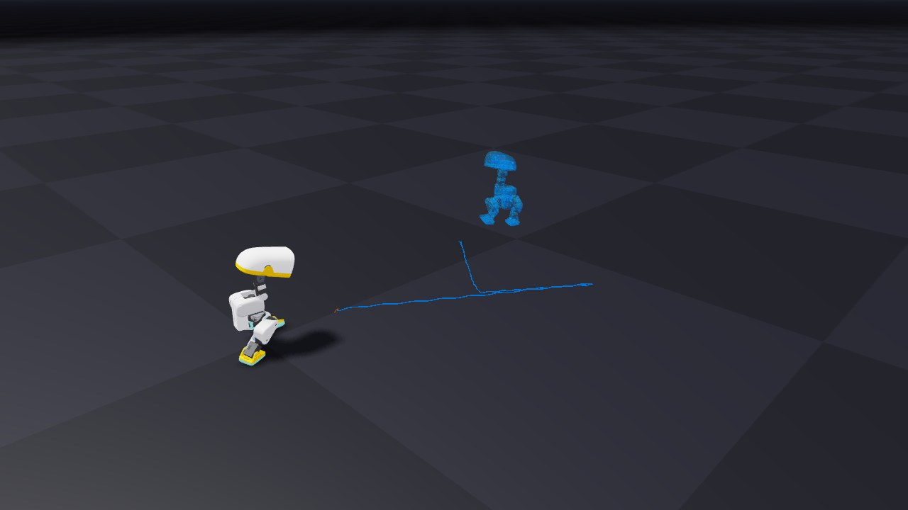

6. Can a better score hide worse walking?¶
First evaluate a trained checkpoint so there is a real trajectory to inspect:
uv run --project environments/locomotion python scripts/locomotion/evaluate.py --checkpoint latest
uv run --project environments/locomotion python scripts/locomotion/reward_workshop.py --trajectory outputs/evaluation/receipt.json
The reward workshop replays recorded motion. Move reward-weight sliders and watch the original/candidate scores. Change velocity tolerance to make the tracking curve narrower or broader. These controls rescore the same states; they do not update a policy or generate alternate movement.
See the working controls before trying them

This is the baseline policy's actual pose at 6.00 s. The scores integrate all 1000 recorded transitions over 20 seconds. Changing only action_rate_l2 from −0.1 to −1.0 gives 251.4055 → 244.6884 for this same motion; its measured tracking errors stay unchanged. The candidate objective is loaded here; its separately trained policy appears below.
Each original coefficient stays visible above its candidate slider. The disabled head_pose_bias term is absent because the recording cannot recover it. Save candidate and training command exports a recipe; it does not start training.
The manager evaluates each active term, multiplies it by its configured weight, sums the results, then multiplies by the 0.02 s control interval. Recorded per-term rates are converted back to raw terms before applying candidate weights. Terms disabled during collection cannot be reconstructed and are not offered as new controls.
The linear tracking reward is exp(-squared_heading_velocity_error / std²). Width changes recompute this term from the squared error recorded at the same post-physics instant as the reward, before autoreset. The evaluator's separate pre-step metric velocities are not substituted for that reward-time state. Merely multiplying the previous score would be incorrect.
Predict what changing the tolerance does

At the same nonzero velocity error, a larger width gives a larger tracking reward. Both curves equal one at zero error; increasing tolerance does not create better tracking. The right panel shows this term's contribution after its actual weight and control interval are applied. These are equation curves using the nominal parameters, not learned-policy measurements.
Try the workshop's width slider, then explain why making the score easier to earn could leave task performance unchanged.
Predict what stronger smoothness will teach¶
Make the action_rate_l2 weight ten times more negative: −0.1 → −1.0. Before retraining, predict whether the duck will walk more smoothly, stop walking, or fall. The penalty measures changes in consecutive raw actions; it does not directly measure motor torque or energy.
We actually trained this candidate from scratch with the same seed and budget as the reference: 4096 environments × 24 steps × 1000 iterations, or 98,304,000 transitions per policy. The saved task/learner recipes differ only in that reward weight. Both were evaluated on the same balance-starts-v1 initial state and 20-second commands.

Both policies stayed upright for 20 seconds. The candidate's forward/backward/lateral response gains were approximately zero, so it failed the locomotion criteria. Its requested-target rate RMS fell from 8.17 to 0.72 rad/s, but the baseline earned more under both objectives: 251.41 versus 197.68 under the original, and 244.69 versus 197.62 under the candidate objective. This is a poor learned result, even under its own objective; a changed reward does not guarantee successful optimization. It is one training seed and one physical start, not an aggregate robustness result.

To inspect your own comparison, train a candidate with the workshop below, then record both policies from the same physical start. Inspect the per-term contributions: which component was reduced, and which tracking reward was lost?

Reproduce the longer measured training run
The workshop's saved command starts with the bounded 128-environment, 50-iteration teaching preset. The measured reference comparison above used this larger equal-budget candidate:
uv run --project environments/locomotion --locked isaaclab train --rl_library rsl_rl --task MicroDuckTutorial-Velocity-Flat --num_envs 4096 --max_iterations 1000 --seed 42 --run_name reward_action_rate_x10 --visualizer none env.rewards.action_rate_l2.weight=-1.0
Evaluate its exact saved checkpoint with --start-protocol balance-starts-v1 --seed 0, then compare with the same physical start of your baseline. Keep every result; the experiment does not guarantee a particular learned outcome.
Find a loophole¶
Try increasing upright/standing-related rewards while reducing velocity tracking. Can a nearly stationary trajectory earn a more attractive score? Compare task metrics before deciding that a larger return is useful.
Select Save candidate and training command. The workshop writes candidate.json, scores.json, a score plot, and train-candidate.txt. Inspect the command, then run it in a separate terminal to train a new candidate with an explicit configuration. New training is what can change behavior.
For headless rescoring:
uv run --project environments/locomotion python scripts/locomotion/reward_workshop.py --trajectory outputs/evaluation/receipt.json --headless
Add --candidate outputs/reward-workshop/candidate.json to reload saved weights. Add --capture with --headless to render the recorded pose stream.
Once candidate training writes a checkpoint, compare the two actual policies with a ghost:
uv run --project environments/locomotion python scripts/locomotion/reality_gap.py --checkpoint logs/rsl_rl/microduck_tutorial/BASELINE_RUN/model_49.pt --candidate-checkpoint logs/rsl_rl/microduck_tutorial/CANDIDATE_RUN/model_49.pt --seed 0
Replace both paths with saved checkpoints. Reward-only rescoring keeps one motion stream; this command runs two learned policies. Compare both recorded trajectories under both objectives using the workshop and retain independent tracking/fall metrics. Do not compare only each policy's preferred reward. See the ghost controls for synchronized playback and early-ending markers.
The evaluator uses the common nominal reward configuration when comparing policies. A candidate's training objective is recovered explicitly from its saved parameters, then applied to both recordings during rescoring.
Record: “I increased the score by …; this does/does not demonstrate improved walking because ….”